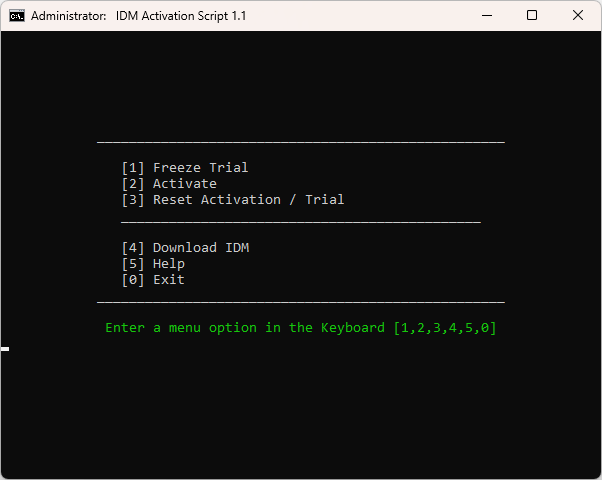
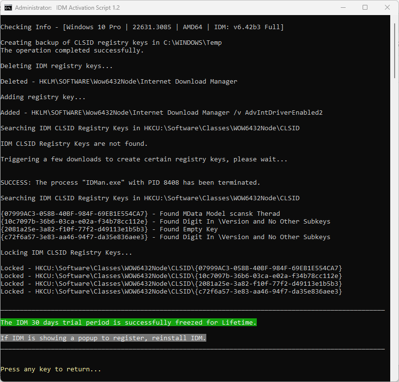

IDM Activation Script
An open-source tool to activate and reset the trial of Internet Download Manager
Features
- IDM freeze trial and activation with registry key lock method
- Activation and trial persist even after installing IDM updates
- IDM trial reset
- Fully open source
- Based on the transparent batch script
Download / How to use it?
- First fresh install Internet Download Manager. Make sure previous cracks/patches are removed/uninstalled if there are any.
- After that follow the below steps to activate it.
Note
- 📌 The activation option is currently not working in the script, use the Freeze trial option to lock 30-day trial period for the lifetime.
Method 1 - PowerShell
(Recommended)
- Right-click on the Windows start menu and select PowerShell or Terminal (Not CMD).
- Copy-paste the below code and press enter
irm https://massgrave.dev/ias | iex - You will see the activation options, follow the on-screen instructions.
- That’s all.
Info
Freeze Trial
- IDM provides a 30-day trial period, you can use this option in the script to lock this trial period for the lifetime so that you won’t have to reset the trial again and your trial won’t expire.
- This method requires the Internet at the time of applying this option.
- IDM updates can be installed directly without having to freeze it again.
Activation
(*Currently not working)
- This script applies the registry lock method to activate the Internet download manager (IDM).
- This method requires the Internet at the time of activation.
- IDM updates can be installed directly without having to activate it again.
- After the activation, if in some cases, IDM starts to show an activation nag screen, then just run the activation option again without using the reset option.
Reset IDM Activation / Trial
- Internet download manager provides a 30-day trial period, you can use this script to reset this Activation / Trial period whenever you want.
- This option also can be used to restore status if in case IDM reports a fake serial key and other similar errors.
OS requirement
- The project is supported for Windows 7/8/8.1/10/11 and their Server equivalent.
- The PowerShell method to run IAS is supported on Windows 8 and higher.
Advanced Info
- To activate in unattended mode, run the script with the
/actparameter. - To freeze the trial in unattended mode, run the script with the
/frzparameter. - To reset in unattended mode, run the script with the
/resparameter.
How does it work?
- IDM stores the data related to trial and activation across various registry keys. Some of these keys are locked to protect them from tampering and data is stored in a pattern to track the fake serial issue and the remaining trial days. To activate it, the script here simply generates those registry keys by triggering a few downloads in IDM, identifies those registry keys, and locks them so IDM can’t edit and view them. That way IDM cannot show the warning that it’s activated with a fake serial key.
Troubleshoot
- Browser Integration Fix: Chrome - Firefox
- Reach out to us on Discord (signup not required) with an error screenshot.

Changelog
v1.2
- Added back activation option with a randomized name, email, and key in registration details along with a warning that it’s not working for some users, the recommended option is to use Freeze trial.
v1.1
- IDM update 6.42b3 has started showing fake serial popups with IAS activation, due to this we have removed the activation option and replaced it with the Freeze trial option to lock the 30-day trial period for the lifetime.
- Now the script will disable quick-edit in CMD windows using Powershell instead of editing registry, thanks to @abbodi1406 for the code and @awuctl for the idea.
- Code to relaunch script with conhost.exe to avoid terminal app is now merged in quick-edit disable code, thanks to @abbodi1406.
v1.0
- Added the code to relaunch the script with conhost.exe if the script is running from the terminal app.
- Fixed an issue in getting the current user account SID.
v0.9
- Fixed an issue where the script can not activate and reset IDM in non-admin user accounts.
- Fixed an issue where the script incorrectly shows that IDM is activated.
- Fixed an issue where a fake serial pop-up may appear. The script will also show the info to run the activation option again without using the reset option.
- Fixed an issue where Powershell code to launch IAS may not work due to GitHub block in some regions. It will use the new BitBucket repo as a fallback link.
- IDM registry scanning and locking code is now written in Powershell.
- The script update checker code is added to the script.
- The script will now disable quick edit mode temporarily because users often click inside the script window and it pauses the script.
- The script will back up the CLSISD registry keys before performing operations on them.
- Many error checks are added to better identify the issues.
v0.8
- Move the project to Github and massgrave.dev
- Minor bug fixes
- Add info to inform users that empty registry keys are being deleted when the script deletes a lot of them
Screenshots


Credits
| Dukun Cabul | Original researcher of this IDM trial reset and activation logic, made an Autoit tool for these methods, IDM-AIO_2020_Final |
| AveYo aka BAU | reg_own lean and mean snippet |
| abbodi1406 | Help in coding |
| WindowsAddict | IAS Author |
And thanks to the IAS users for their interest, feedback, and assistance.
Made with Love ❤️